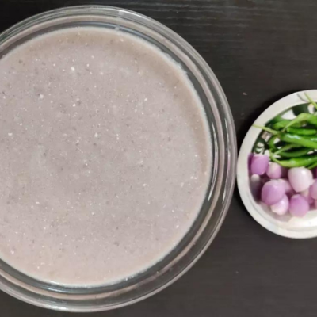
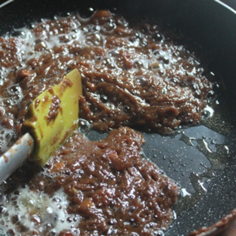

CONNECT WITH HEALTHY LIFE
CONNECT WITH HEALTHY LIFE

தேவையான பொருட்கள்:
செய்முறை:
1. பீஜே கறுப்பு கவுனி அரிசியை 8 மணிநேரம் அல்லது அதற்கு மேல் / ஒரே இரவில் கழுவி ஊற வைக்கவும்.
2. 1 1/2 கப் தண்ணீரில் 5 முதல் 6 விசில் அல்லது தேவைக்கேற்ப பிரஷர் சமைக்கவும்.
3. சமைத்த நல்ல நிலைத்தன்மை - உள்ளேயும் வெளியேயும் மென்மையாகவும் சற்று விறைப்பாகவும் இருக்கும்.
4. இப்போது, தேங்காய் துருவல், சிட்டிகை ஏலக்காய் தூள், சிட்டிகை உப்பு சேர்த்து, நன்கு கலந்து, வெல்லம் உருகும் வரை 5 முதல் 10 நிமிடங்கள் வரை சமைக்கவும் மற்றும்
அரிசியுடன் நன்கு கலக்கவும்.

தேவையான பொருட்கள்:
செய்முறை:
1. பீஜே கறுப்பு கவுனி அரிசியை முதலில் நன்கு கழுவி, ஒரு துணியில் போட்டு துணியை விரித்து காய வைக்க வேண்டும்.
2. பின்பு ஒரு கடாயில் சேர்த்து வறுத்து, சூடாறியவுடன் மிக்ஸி ஜாரில் சேர்த்து பவுடராக அரைத்துக்கொள்ளவும்.
3. பொடியாக திரித்த கவுனி அரிசியை சிறிதளவு தண்ணீர் ஊற்றி கட்டி இல்லாமல் கலந்து வைத்துக்கொள்ளவும்
4. பின்னர் ஒரு பாத்திரத்தில் , நான்கு கப் தண்ணீர் சேர்த்து கொதிக்கும் போது, கவுனி அரிசி கலவையை சேர்த்து கைவிடாமல் கலக்கவும்.
5. மிதமான சூட்டில் வைத்துக்கொண்டு கலக்கவும்.
6. அரிசி மாவு சேர்த்து கலந்து கொதிக்கும் போது, மாவு நன்கு வெந்து கஞ்சி பதம் வந்தவுடன் உப்பு சேர்த்து நன்கு கலந்து இறக்கவும்.
7. கஞ்சி சூடாறியவுடன் தயிர் அல்லது மோர் கலந்து குடிக்கவும்.
8. மிகவும் சுவையாக இருக்கும். பண்டைய காலத்தில் கஞ்சியுடன் பச்சை மிளகாய், சாம்பார் வெங்காயம் சேர்த்து குடிக்க கொடுப்பார்கள்.

தேவையான பொருட்கள்:
செய்முறை:
1. பீஜே கறுப்பு கவுனி அரிசி கழுவி 6-7 மணிநேரம் ஊற வைத்து அரைத்துக்கொள்ளவும்
2. பின் 1 கப் அளவு தேங்காய்ப் பால் எடுத்துக்கொள்ள வேண்டும்.
3. கவுனி அரிசி அரைத்த மாவுடன் தேங்காய்ப் பால் சேர்த்து கலந்து கொள்ளவும்
4. ஒரு பாத்திரத்தில் 1/2 கப் தண்ணீர் ஊற்றி அதில் கருப்பட்டியைப் போட்டு கரைந்தபின் வடிகட்டி வைக்கவேண்டும்.
5. பின் ஒரு அடிகனமான கடாயை அடுப்பில் வைத்து கரைத்து வைத்த கவுனி அரிசி மற்றும் தேங்காய்ப்பால் கலவையை ஊற்றி குறைந்த தீயில் கட்டியில்லாமல் கைவிடாமல் கிளற வேண்டும்.

6. பின்பு வடிகட்டிய கருப்பட்டியை ஊற்றி நன்கு கொதித்தபின் அதில் வறுத்த முந்திரி சேர்த்து கிளறவும்
7. சூடான கவுனி அரிசி அல்வா ரெடி